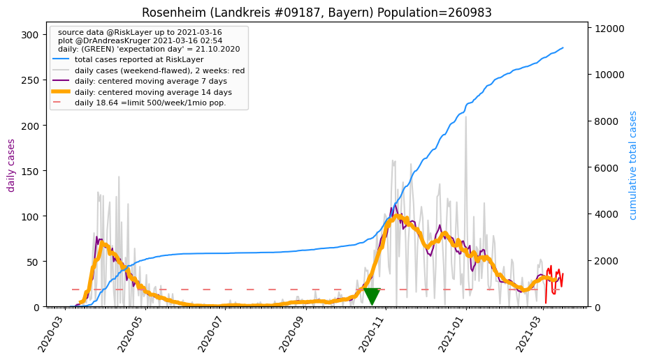
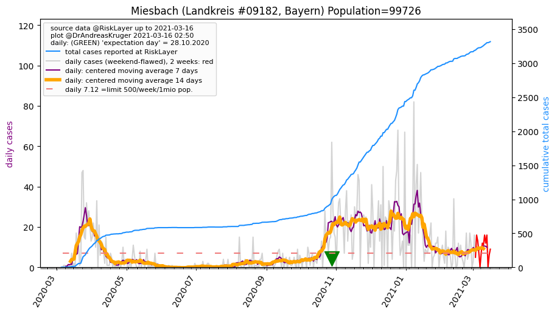
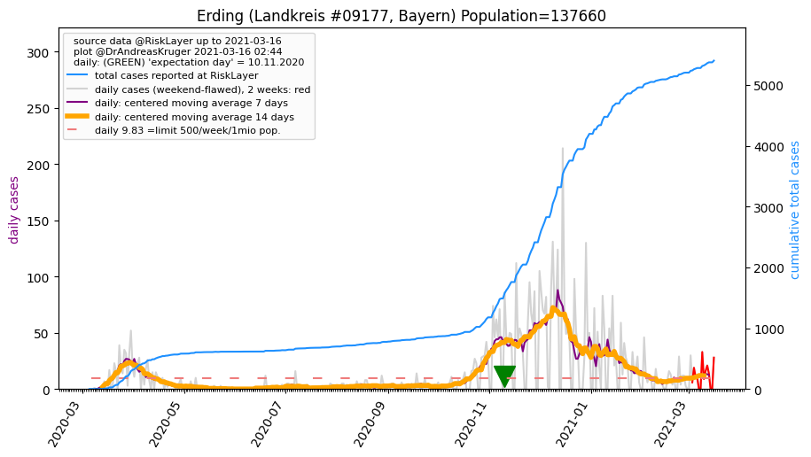
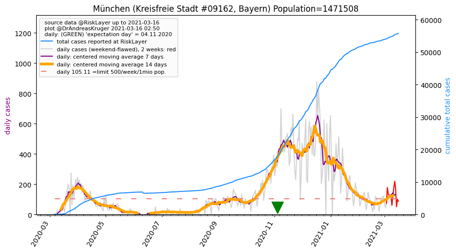
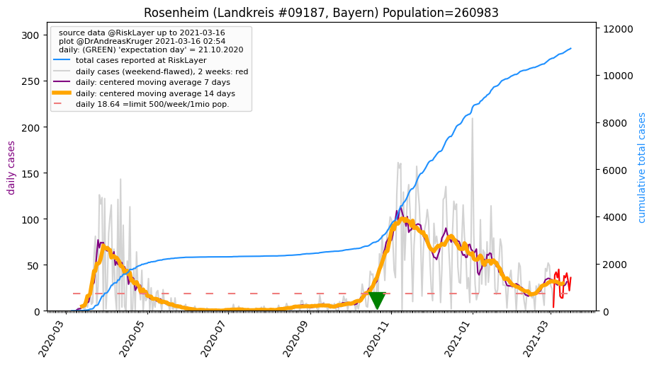
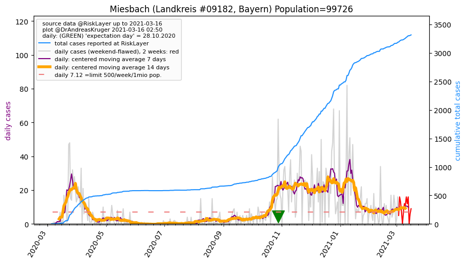
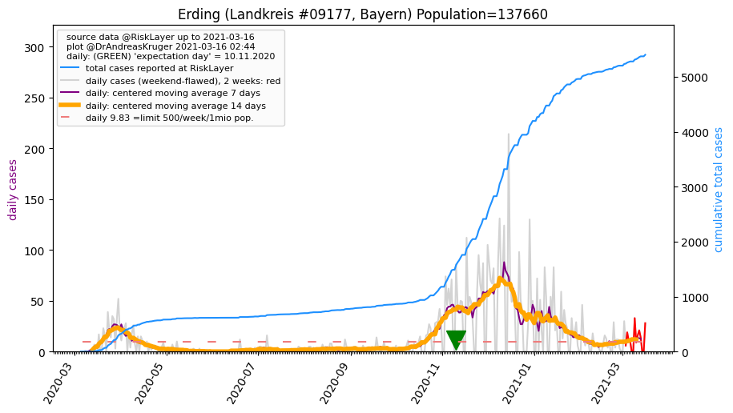
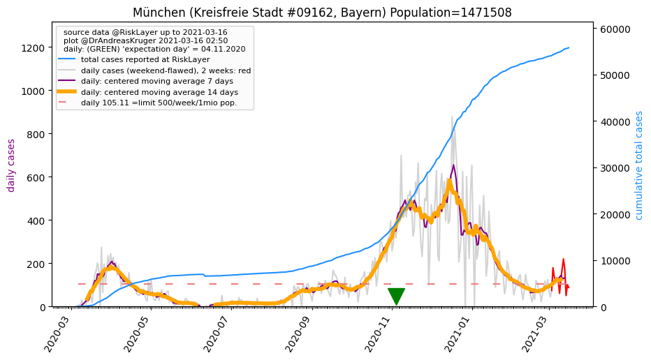

")


")
")
")
")
")


")
")
")
| Rosenheim_KS (0.0 km) |
Rosenheim_LK (5.5 km)  |
Miesbach_LK (25.2 km)  |
Ebersberg_LK (29.6 km) |
| Traunstein_LK (35.7 km) |
München_LK (43.9 km) |
Mühldorf a. Inn_LK (48.4 km) |
Bad Tölz-Wolfratshausen_LK (48.6 km) |
| Erding_LK (51.3 km)  |
München_KS (54.2 km)  |
Altötting_LK (60.3 km) |
Berchtesgadener Land_LK (61.6 km) |
| Starnberg_LK (64.4 km) |
Beware that this is a temporary and experimental page - it might get removed, so please do not link to it. Instead link to project http://tiny.cc/cov19de.